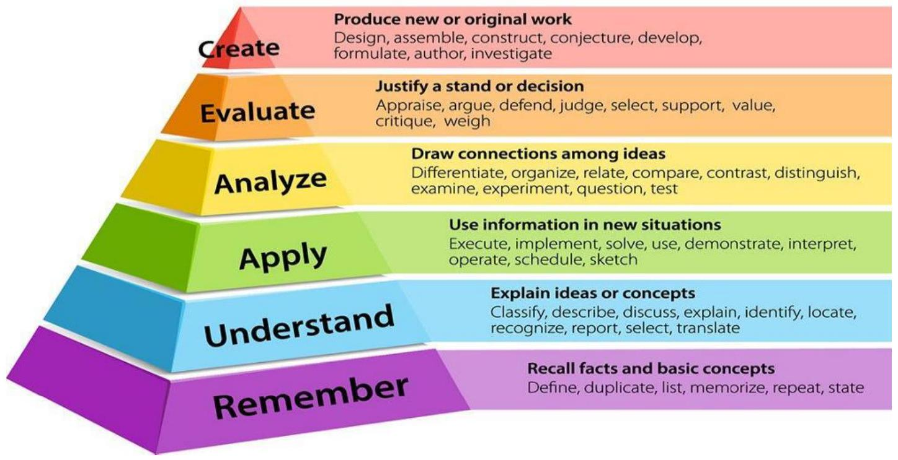
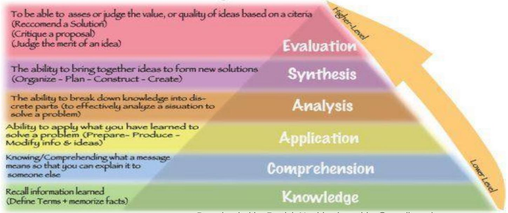

Development Process & Evaluation
6.2 CURRICULUM DEVELOPMENT PROCESS
A process is the flow of an activity from the initial stage to the end stage without repetition. Curriculum process undergoes systematic stages of development which are well ordered one building unto the other in a sequential manner.
6.2.1 Purpose of education and curriculum
The main purpose of education is to socialize an individual among peer groups. Without a community and group, life and socialization of an individual would have very little meaning. From the beginning of human society, the main objective of education has been that of transmitting to the child the accumulated experiences of his people and their culture as well as of training him to fit into the membership of the group. It was through this background that the society has managed to survive and gain increasing knowledge over all forms of human institutions; governance, rituals, survival etc.
Curriculum on the other hand was prompted during the World wars, especially the 1st World War (1918) when Franklin Bobbat published a book called "the Curriculum " to provide a course of operations on the war and its derived out comes. This period was marked by industrial and technological development. There was need to design programmes of activity or events which had profound effect on the social, economic and political life of people. Curriculum as seen now is to create a situation of social activity- based on development of the people.
6.2.2 Functions of Education and Curriculum
- Education provides knowledge desired attitudes and practical skills to individuals.
- Education matures and individual for a sense of responsibility, accountability and service to the society.
- Education trains an individual for self-discipline, self appraisal and sense of humour for self-reliance.
- Education provides ways and means of recognizing the environment and its ecological content for use of survival trends.
The above illustration shows the curriculum cycle used in Kenya by the KICD
TAXONOMIES OF LEARNING
Benjamin Samuel Bloom (February 21, 1913 - September 13, 1999) was an American educational psychologist who examined and then restructured the way teaching should be approached, to maximise learners' performance. His book, The Taxonomy of Educational Objectives: The Classification of Educational Goals (1956), set out a series of learning objectives that became known as Bloom's taxonomy. It continues to impact the way educational curricula are structured to this day. Bloom's taxonomy divided learning into three psychological domains -
- Cognitive (processing information)
- Affective (attitudes and feelings)
- Psychomotor (physical skills).
1. The six cognitive levels of Bloom's taxonomy (Revised)
Within those domains, his taxonomy progressed from Lower Order Thinking Skills (LOTS) to Higher Order Thinking Skills (HOTS), through six levels: knowledge, comprehension, application, analysis, synthesis and then evaluation. Essentially, Bloom's model evolved education from being a case of learners just memorising information they had been taught to first remembering it; then understanding it; then applying it (in exercises); then analysing it and, finally, being able to evaluate it at a complex level. Bloom's taxonomy was updated by former students of his in 2001, and the updated version is now widely used in all spheres of education. I go into a deep-dive on Bloom's taxonomy on this page, for those who want some more information. In 2008, a variation of Bloom's was created for use specifically in the modern, digitally-enabled classroom (see Bloom's Digital Taxonomy: A reference guide for teachers.
Bloom's revised taxonomy: what is it, and how is it used?
Bloom's taxonomy is a multi-layered model for encouraging learning by progressing through six levels of increasing complexity. The six levels are:
| Cognitive levels | Explanation |
|---|---|
| Creating | Putting elements together to form a new, coherent and functional whole. |
| Evaluating | Making judgements based on criteria and standards by checking and critiquing. |
| Analysing | Breaking information into constituent parts and establishing how they relate to one another. |
| Applying | Implementing what was learnt in the Remembering and Understanding phases. |
| Understanding | Constructing meaning by interpreting and summarizing information. |
| Remembering | Recalling information from long-term memory. |
Bloom's taxonomy encourages learners to engage with knowledge at a deeper and more interactive level, working with what they are learning in the real-world sense, rather than just passively taking information on board.
6.2.3 Bloom's taxonomy as an interdependent learning process
While Bloom's taxonomy arranges learning into six cognitive levels in order of hierarchy and complexity, it also sees each level as being interdependent on the other levels, with all levels contributing to the final, holistic learning outcome. This is why, while Bloom's taxonomy is traditionally rendered as a pyramid or even an inverted pyramid, it is also rendered in other forms that place more emphasis on the interdependence of the levels:
The interdependence of Bloom's different learning levels can be articulated through logic:
- Before we can understand a concept, we must be able to remember it.
- Before we can apply the concept, we must be able to understand it.
- Before we analyse it, we must be able to apply it.
- Before we can evaluate its impact, we must have analysed it. Before we can create something based on the concept, we must have remembered, understood, applied, analysed and evaluated the concept.
The non-pyramid forms for expressing Bloom's taxonomy indicate that learning may not always progress linearly up through the six levels. Rather, learners might move back and forth between different levels depending on the learning situation, or they might spend more time in some levels of the taxonomy than in others. The human brain, by nature, tends to behave in a lateral manner rather than a set linear manner.
Level one - Remembering
Verbs: Define, Label, List, Name, Recite, Repeat.
Remembering is the act of retrieving knowledge and can be used to produce things like definitions or lists. It is the lowest of the taxonomic levels but is essential for the learning process because learners need to have knowledge in place before they can engage with it at higher cognitive levels. Examples of Remembering include reciting the times' table, naming different parts of the human anatomy, answering true or false questions, recalling critical events on a historical timeline or even naming the six cognitive levels of Bloom's taxonomy. Remembering requires no understanding of the knowledge, only to have it accurately and thoroughly in mind.
Level two - Understanding
Verbs: Explain, Discuss, Examine, Generalize, Group, Order, Paraphrase, Rephrase, Sort.
The next level in the taxonomic structure is Understanding, which is defined as the construction of meaning and the building of relationships. Understanding can be demonstrated by, for example, grouping a list of different animals into the right categories (marine, avian, terrestrial, amphibian); explaining how one event on a historical timeline impacted on another, discussing the moral of a story or being able to explain why Bloom's has different cognitive levels and the logic behind their hierarchy.
Level three - Applying
Verbs: Compute, Demonstrate, Direct, Dramatise, Formulate, Make, Present.
The third level in Bloom's taxonomy, Applying, marks a fundamental shift from the pre-Bloom's learning era because it involves remembering what has been learnt, having a good understanding of the knowledge, and then being able to apply it to real-world exercises, challenges or situations. Examples of Applying in action could include making repairs to a computer's components; role-playing mediation and conflict resolution between two warring countries; demonstrating the steps that take place in HIV counselling and testing, or presenting a talk on solutions to climate change.
Level four - Analysing
Verbs: Simplify, Criticise, Distinguish, Explain, Illustrate, Inspect, Question.
Analysing is the cognitive level where a learner can take the knowledge they have remembered, understood and applied, then delve into that knowledge to make associations, discernments or comparisons. Analysing would mean a learner can take complex information, and simplify it or summarise it. As other examples, a learner would be able to give reasons why one historic military campaign failed and why another succeeded, or critically examine aspects of Bloom's original taxonomy and explain why his students later updated them.
Level five - Evaluating
Verbs: Decide, Forecast, Judge, Prioritise, Revise, Value, Weigh.
The fifth level in Bloom's Digital Taxonomy is evaluation. This level requires the learner to make criteria-based judgements through the processes of critiquing and checking. Evaluating could involve reading a book and writing a review on its merits; looking at the Universal Declaration of Human Rights and deciding which rights are more or less relevant to a given country; suggesting ways to introduce digital technology into the classroom environment, or making an informed judgement in a role play of court case proceedings.
Level six - Creating
Verbs: Construct, Write, Develop, Design, Invent, Originate, Set up.
The final taxonomic level is concerned with taking various elements and creating a new, coherent product. This level draws on all of the other levels, with the learner remembering, understanding and applying knowledge; analysing and evaluating outcomes and processes, and then constructing the end product, which may be either physical or conceptual. For example, designing and building a house out of wooden segments, and designing a 3D model of a house on a computer would both be examples of Creating. Another example would be a Learner taking the knowledge of Bloom's taxonomy which they have remembered, understood, applied, analysed and evaluated, and creating a brand new model for the tiers of cognitive thinking and learning.
Original Blooms taxonomy
2. Affective domain
This domain deals with developing learners feelings and emotions, especially in modifying their attitudes towards things and persons. It also deals with interests, appreciations and modes of adjustment (Ndubisi 1985). Some level of cognitive is involved in development of feelings emotions and attitudes. For example, learners can only develop what they know or perceive, conceive and think. However, unlike the cognitive domain, the affective domain has five levels which comprise the following:
- Receiving
- Responding
- Valuing
- Organisation
- Characterisation by a value or value complex
The affective domain was developed by a man called David Krathwohl. . The appropriate way to describe it is "Taxonomy of Educational .Objectives in the Affective Domain". Now let me explain to you what each level means:
Receiving: This refers to willingness to attend to or listen to a given stimuli. For example, before one can develop a feeling of or emotion of courage, one may have to be willing to watch a movie or listen to a story of the courageous exploit of someone else. This is the first level in the inculcation of a spirit of courage in a learner;
Responding: This refers to the response that comes from the learner as a result of attending to or receiving stimuli presented. As in the example given, the learner could respond to the story in various ways e.g. staying through the story while it is being told, etc.
Valuing: This refers to the acceptance of the value being taught as 'courage', 'honesty', by the learner. It is an internalizing process involving accepting the value to one that is contrary to it, and commitment to live the value. For example, having received and responded positively to, say, a story telling lesson on "honesty is the best policy", the learner may internalize or imbibe the value, preferring it to any other opposed to it, and be ready/willing to commit himself to living the value of honesty;
Organising/Organisation: This is the bringing together of different values and organising them into a value system which eventually leads to character formation. In other words, this level is important in that the learner is able to put together different values of honesty, perseverance, handwork and organize them into a value system that may result in producing in him/her, the character expected of a good citizen;
5. Characterisation by a value or value Complex: This is the last stage and the final or end result of what learners is expected to become as a result of exposure to the learning material in the affective domain. It is expected at this stage that the learner's behaviour would have been modified or his/her attitude changed for the better, and that the new behaviour learnt becomes a permanent feature or aspect of his/her character.
3. Psychomotor Domain
This domain deals with physical skills training. It involves getting learner to coordinate the hand, eye and ear in such a skillful way as to result in the performance of certain motor skills. Such physical skills may include playing games such as football, tennis etc. Great dribblers in football such as the world renowned Diego Maradona or Nigeria's Austin "JayJay" Okocha, or people involved in acrobatics, or a racing cars etc. are people who have developed great manufacturer/physical dexterities Music performers, drummers, saxophonists etc. combine great physical/manual dexterity with aesthetics to produce great music. All these belong to the psychomotor domain of educational objectives, and as you can see from the illustrations, it is a performance objective but combines elements of both the cognitive and affective processes. In other words, both the mental as well as emotional (feelings) processes are involved in psychomotor objectives. For example, the great football dribblers use their intelligence, combined with their love for football in learning various "dribbling" skills, which are put to use on the field of play. This domain was developed by Anita Harrow in 1972. Like the cognitive domain, the psychomotor domain of educational objectives has six levels. These six levels are:
- Reflex movement
- Basic fundamental movements
- Perceptual abilities
- Physical abilities
- Skilled movements
- Non-discursive communication
These are briefly explained below:
Reflex Movements: This pertains to movements that are as a result of biological reflex actions, e.g. a person automatically closes his eyes when an insect is flying towards his eyes. This is the lowest level of movement controlled by biological instincts;
Basic Fundamental movements: Performing complicated dance steps, for example, involve certain basic movements which must be learnt first. To play tennis well, involved a combination of various movements which cannot be learnt all at once, but step by step from the basic/fundamental component parts of the complex movements;
Perceptual Abilities: This involves the combination of perception, a mental process, in learning physical skills;
Physical Abilities: To perform physical abilities, physical skills training are necessary, e.g. the development of muscles through certain physical fitness exercise;)
Skilled Movements: This involves learning or combining various basic movements into a pattern that becomes a skill.
Non-Discursive Communication: The body can be used to communicate, i.e. they include movements which are learnt for communication purposes using the body. The body has a language, the body can speak. Actors learn how to use their bodies to communicate feelings or other messages.
7.0 Curriculum monitoring and Evaluation
7.1 Curriculum monitoring
7.1.1 Concepts Related to monitoring of curriculum.
Curriculum monitoring - refers to the process of gathering information for evaluating the effectiveness of the curriculum and ensuring that the intended, implemented and attained curricula are aligned. This process typically focuses on such issues as relevance, consistency, practicality, effectiveness, scaling-up and sustainability, as well as whether learners are achieving the expected learning outcomes. It measures the extent to which the curriculum is commensurate with the diverse needs of all learners.
Scaling - up.
Refers to expanding or replicating innovative pilot or small- scale projects to reach more people and/or broaden the effectiveness of an intervention.
Relevance.
Refers to applicability and appropriateness of a curriculum to the needs, interest, aspirations and expectations of learners and society in general.
Consistency
The concept of consistency means that accounting methods once adopted must be applied consistently in future. It ensures that standards are aligned across grade levels to eliminate instructional gaps between the years. Also same methods and techniques must be used for similar situations.
Practicality.
In assessment practicality means that the test is easy to design, easy to administer and easy to score. No matter how valid or reliable a test is it has to be practical to make, economical to delivering quality and not excessively expensive.
Effectiveness
Curriculum effectiveness is defined as the existent to which a curriculur program and its implementation produce positive and curricularly valid outcomes for students.
Sustainability
Sustainable curriculum would be transformative rather than transmissive as its goal is to "equip all people with the knowledge, skills and understanding necessary to make decisions based upon their full environmental, social, cultural and economic implications" rather than transmissive with a goal to provide students with knowledge. It would not be specialised, content-driven units of study on sustainability but integrated across courses and units. Sustainability is a paradigm that requires us all (educators and students) to examine our own values, hidden assumptions, motivations, beliefs and actions. We reflect on how we live and work and how this impacts the environment, economy and others (social and cultural aspects) on local, regional, national and global levels. Sustainable curriculum is based on seven principles.
- transformation and change (not just knowledge),
- education for all and lifelong learning,
- systems thinking (highlighting connections between environmental, economic, social and political systems),
- envisioning a better future (problem solving, critical thinking and reflection,
- participation (engaging groups and individuals.)
- partnerships for change. It would equip students with the skills to learn and develop their own skills to the changing world. It would be innovative. Students would learn to question, think critically from various viewpoints and make well-informed ethical decisions.
Sustainability Education is often referred to as Education for Sustainable Development. Education for Sustainable Development allows every human being to acquire the knowledge, skills, attitudes and values necessary to shape a sustainable future.
7.1.2 Principles of monitoring of curriculum.
- Monitoring and evaluation should refer back to existing baseline data or begin with a baseline study.
- Monitoring and evaluation are closely linked to and should reflect the methodology of the initial project appraisal.
- Monitoring should be linked to the specific programme objectives that were defined through the appraisal and programme planning process.
- Monitoring information should be used in decision-making.
- Monitoring and evaluation should respect principles of participation and involve all programme stakeholders.
- Monitoring and evaluation should respect and protect the rights, welfare and confidentiality of all those involved in the programme.
7.1.3 Process of curriculum monitoring.
Refers to the process of gathering information for evaluating the effectiveness of the curriculum and ensuring that the intended, implemented and attained curricula are aligned. This process typically focuses on such issues as relevance, consistency, practicality, effectiveness, scaling - up and sustainability, as well as whether learners are achieving the expected learning outcomes. It measures the extent to which the curriculum is commensurate with the diverse needs of all learners.
7.1.4 Purpose of Curriculum Monitoring
Monitoring is important to:
- Determining if the curriculum is still relevant or effective.
- Know if the curriculum is working or not.
- Provide decision on what aspects have to be retained improved or modified.
- Help develop new targets, programs and strategies.
- Stay on track and improve project efficiency and accountability.
- School monitoring and evaluation help in providing a consolidated source of information showing the progress of the school.
- Monitoring and evaluation give a basis for both questioning and testing assumptions. .
- help schools achieve their goal.
- It shows the mistakes and creates paths for both learning and improving.
- Through monitoring and evaluation in schools, good leadership is put into practice and accountability which leads to school improvement. This also helps in figuring out whether the teaching method in the school is delivering to the desired educational results. Through this, the school can be accountable to the stakeholders.
- Monitoring and evaluation systems have enhanced the performance of both the teachers and the students. The teachers can do an assessment and the behavior of the student to identify the areas where the student is failing. It is by that; teachers can align their teaching skills accordingly to improve student performance.
- Monitoring and evaluation help in planning on future of the school.
7.1.5 Importance of setting objectives in curriculum design.
- To help in deciding whether to accept or reject a programme.
- To ascertain the need for the revision of the course content.
- To help in future development of the curriculum material for continuous improvement.
- To improve methods of teaching and instructional techniques.
7.1.6 Aspects of curriculum that should be monitored.
Objectives .
Objectives are statements that describe the end-points or desired outcomes of the curriculum, a unit, a lesson plan, or learning activity. They specify and describe curriculum outcomes in more specific terms than goals or aims do. Objectives are a key component of the curriculum design process, as they help teachers determine learning outcomes (what they should teach and what students should learn), methods of instruction, and objective ways to measure student progress and performance. Aims are general statements that provide direction or intent to educational action. Aims are usually written in amorphous terms using words like: learn, know, etc. Curriculum goals are general, broad statements that lead towards long-term outcomes.
Content.
Curriculum content simply means the totality of what is to be taught in a school system. The content component of teaching learning situation refers to the important facts, principles and concepts to be taught. Curriculum content is another main lever of education quality. The knowledge, skills and attitudes imparted by learning areas/subjects, cross-cutting approaches and extra-curricular activities is a main source of systematic and comprehensive learning.
Principles of curriculum content
- Be broad and balanced.
- Be suitable for learners of different ages, abilities and aptitudes.
- Provide for appropriate learner progression.
- Cover every statement of what matters.
Criteria for the Selection of Subject-Matter or Content of the Curriculum
- Self-sufficiency.
- Significance.
- Validity.
- Interest.
- Utility.
- Learnability.
- Feasibility.
Comprehensiveness,
Comprehensive curriculum is a written plan that guides the design of children's goals for learning and development, the experiences children will have to achieve those goals and the way in which adults, both staff and families, will support children's learning to achieve school success.
What makes a curriculum comprehensive?
A comprehensive curriculum centers around four main ideas:
- It is student-centered.
- Values students as individuals.
- It is based on an understanding of widely accepted methods of how students learn.
- Encourages teachers to use methods that promote concepts of learning.
Depth.
What is breadth and depth in curriculum ?
Breadth of learning refers to the full span of knowledge of a subject. Depth of learning refers to the extent to which specific topics are focused upon, amplified and explored. Developing Curriculum Depth' is an informative, research-based course explaining the importance of and ways to deliver a broad, deep, rich curriculum to effectively develop children's knowledge and understanding.
Timeliness,
Curriculum Timelines are broad outlines that give our community information regarding units of study that are included at each grade level and course for year long and term long courses. The timelines are approximate and are intended to provide a general overview of the curriculum.
Ensuring timeliness.
Timely return of feedback is one of the biggest problems the academics have in relation to feedback and assessment and also a great source of student dissatisfaction. Feedback should be returned in a timely manner and the extent, nature and timing of feedback for each task must be made eclear to students in advance so that they can make the best use of the feedback.
Why is feedback important?
- The purpose of feedback is to provide students with guidance as to how to improve their work. If that guidance is not received in time, the feedback cannot be used, resulting in lack of knowledge as to where that improvement should be made.
- Feedback impacts greatly on student satisfaction.
Quality.
A principal objective of a quality curriculum is to enable students to acquire and develop the knowledge, skills and values, and the associated capabilities and competencies to lead meaningful and productive lives. Curriculum can be organized into three major components: objectives, content or subject matter, and learning experiences.
7.1.7 Tools for monitoring of curriculum.
These include;
- Project records,
- Formal surveys,
- Interviews,
- Direct observation,
- Focus group discussions.
7.1.8 Challenges of Monitoring and Evaluation
- Monitoring and evaluation methods are times consuming to design and implement.
- They require trained staff to ensure success.
- Lack of experience;
- Limited financial and staff resources;
- Gaps in technical knowledge with regard to defining performance indicators, the retrieval, collection, preparation and interpretation of data; and
- Inefficient monitoring and evaluation practices.
Importance of observing ethical issues in curriculum monitoring in cbc.
When most people think of ethics (or morals), they think of rules for distinguishing between right and wrong, such as the Golden Rule ("Do unto others as you would have them do unto you"), a code of professional conduct like the Hippocratic Oath ("First of all, do no harm"), a religious creed like the Ten Commandments ("Thou Shalt not kill..."), or a wise aphorisms like the sayings of Confucius. This is the most common way of defining "ethics"; norms for conduct that distinguish between acceptable and unacceptable behavior.
One may also define ethics as a method, procedure, or perspective for deciding how to act and for analyzing complex problems and issues.
Most people learn ethical norms at home, at school, in church, or in other social settings. Although most people acquire their sense of right and wrong during childhood, moral development occurs throughout life and human beings pass through different stages of growth as they mature.
There are several reasons why it is important to adhere to ethical norms in research.
- Norms promote the aims of research, such as knowledge, truth, and avoidance of error. For example, prohibitions against fabricating, falsifying, or misrepresenting research data promote the truth and minimize error.
- Ethical standards promote the values that are essential to collaborative work, such as trust, accountability, mutual respect and fairness. For example, many ethical norms in research, such as guidelines for authorship, copyright and patenting policies, data sharing policies, and confidentiality rules in peer review, are designed to protect intellectual property interests while encouraging collaboration. Most researchers want to receive credit for their contributions and do not want to have their ideas stolen or disclosed prematurely.
- Many of the ethical norms help to ensure that researchers can be held accountable to the public. For instance, federal policies on research misconduct, conflicts of interest, the human subjects protections and animal care and use are necessary in order to make sure that researchers who are funded by public money can be held accountable to the public.
- Ethical norms in research also help to build public support for research. People are more likely to fund a research project if they can trust the quality and integrity of research.
- Norms of research promote a variety of other important moral and social values, such as social responsibility, human rights, animal welfare, compliance with the law and public health and safety. Ethical lapses in research can significantly harm human and animal subjects, students, and the public. For example, a researcher who fabricates data in a clinical trial may harm or even kill patients, and a researcher who fails to abide by regulations and guidelines relating to radiation or biological safety may jeopardize his health and safety or the health and safety of staff and students.
Examples of ethical principles that various codes address.
Honesty.
Strive for honesty in all scientific communications. Do not fabricate, falsify, or misrepresent data. Do not deceive colleagues, research sponsors, or the public.
Objectivity.
Strive to avoid bias in experimental design, data analysis, data interpretation, peer review, personnel decisions, grant writing, expert testimony and other aspects of research where objectivity is expected or required. Avoid or minimize bias or self-deception. Disclose personal or financial interests that may affect research.
Integrity.
Keep your promises and agreements; act with sincerity; strive for consistency of thought and action. Avoid careless errors and negligence; carefully and critically examine your own work and the work of your peers. Keep good records of research activities, such as data collection, research design, and correspondence with agencies or journals.
Openness.
Be open to criticism and new ideas.
Transparency.
Disclose methods, materials, assumptions, analyses, and other information needed to evaluate your research.
Accountability.
Take responsibility for your part in research and be prepared to give an account (i.e. an explanation or justification) of what you did on a research project and why.
Intellectual Property.
Honor patents, copyrights, and other forms of intellectual property. Do not use unpublished data, methods, or results without permission. Give proper acknowledgement or credit for all contributions to research. Never plagiarize.
Confidentiality.
Protect confidential communications, such as papers or grants submitted for publication, personnel records, trade or military secrets, and patient records.
Responsible Publication.
Publish in order to advance research and scholarship, not to advance just your own career. Avoid wasteful and duplicative publication.
Responsible Mentoring.
Help to educate, mentor, and advise students. Promote their welfare and allow them to make their own decisions. Respect for Colleagues.
Social Responsibility.
Strive to promote social good and prevent or mitigate social harms through research, public education, and advocacy.
Non-Discrimination.
Avoid discrimination against colleagues or students on the basis of sex, race, ethnicity, or other factors not related to scientific competence and integrity.
Competence.
Maintain and improve your own professional competence and expertise through lifelong education and learning; take steps to promote competence in science as a whole.
Legality.
Know and obey relevant laws and institutional and governmental policies.
7.2 Curriculum Evaluation
Let us start this lecture by defining the term evaluation. We shall then discuss reasons why evaluation is undertaken. Phases of curriculum evaluation will be examined briefly since they are covered in details in another lecture. You are advised to go through this lecture noting carefully all areas which will enable you to follow and grasp a detailed discussion on evaluation.
Objectives
At the end of the lecture you should be able to;
- Define the word evaluation
- Describe the purpose of evaluation
- Distinguish the differences between measurement, testing, assessment and evaluation.
Evaluation in the content of education is a process used in obtain information from testing, from direct observation of behavior, from essays and from other devices to assess a students overall progress towards some predetermined goals or subjects. It includes both a qualitative and quantitative description and involves a value judgment of overall student behavior for decision making.
Evaluation and measurement are not the same, although evaluation involves measurement, if we assess a student's knowledge and understanding in a subject by means of an objective or essay type test, thin is measurement. If a teacher puts a value on the student's work, talents, attitudes and other characteristics of behavior that is evaluation. Evaluation should in part involve testing that is non-subjective on the part of the teacher; otherwise it is likely to be unreliable.
Assessment is used interchangeably with evaluation. Testing is the process of using an instrument or test to measure achievement Measurement and testing are thus ways of gathering evaluation and assessment data.
Purposes of Curriculum Evaluation
Evaluation has many purposes; it can be used in the following ways.
- Evaluation as a basis for school marks or grades by teachers
Educational systems require that teachers occasionally submit marks or grades on .students. These marks or grades can be arrived at through formal examinations, regular tests, assignments, laboratories reports, observational information or combination of these. - Evaluation as a Means of Informing Parents
Parents of school children have a right to know how their children are progressing in school. Students" evaluation is the most important way of providing them with this information. - Evaluation for promotion to higher class
Student evaluation is sometimes used to determine whether a student has made enough progress to be promoted to a higher class or form in the school. - Evaluation for Student Motivation
Success in tests and examinations as well is spurts and other school activities can give great encouragement to students. Similarly, failure to do well can make students work harder or strive to do better. Teachers should try to give their students feedback on the evaluation of all aspects of their learning and behavior so that both who do well and those who do not will he motivated to improve on their performance. - Evaluation for Guidance and Counseling Purposes
All students need to be advised to help them solve then own personal problems, whether academic or emotional. The two types of problems are indeed often connected. Successful students tend to enjoy school more than those who are not successful. It is generally those who appear to be failures as indicated by the evaluation of the teaching staff, who need the most attention and it is to them that the class teacher must direct herself. - Evaluation to Access the Effectiveness of the Teaching Strategy
If a teacher does not in some way assess the students improved knowledge, understanding and higher cognitive skills as well as their attitudes and psychomotor abilities will not be able to evaluate the success or otherwise of the teaching strategy she has employed. A higher failure rate in a course is more often due to poor teaching than to the lack of intelligence of the students. - Evaluation for Employment Purposes
Not all students who pass, through post-primary schools will proceed to University or other Institutions of higher learning. Some students may decide to join a company or business. Employers normally require information on potential employees with reference to academic ability, attitude to work, moral character personality and so on. It is therefore necessary for the teachers to evaluate nearly all aspects of the student"s performance while they attend the school.
Curriculum Evaluation
The primary purpose of curriculum evaluation is of course to determine whether the curriculum goals and objectives are being carried out. These goals and objectives are to be evaluated in the first place to determine if they are the right kind of objective. It also determines whether the curriculum is functioning while in operation and using the best materials and the best methods.
Curriculum evaluation also determines whether the products of our schools are successful in higher education and in jobs, whether they can function in daily life and contribute to our society. Curriculum evaluation also determines whether educational program is cost effective, that is to say whether the people are getting the most of their money.
Phases of Evaluation
There are three phases of evaluation which every teacher needs to know
- Pre-assessment
- Formative Evaluation
- Summative valuation
These terms are technical words to differentiate evaluation that takes place before instruction (pre-assessment), during instruction (formative) and after instruction (summative). Pre-assessment evaluation is provided before instruction that takes place before instruction to determine the starting point on instructional program It identifies need prerequisite skills and causes of learning difficulties and to place students in learning groups. Formative evaluation consists of those techniques of a formal and informal nature, including testing, that are used during the period of instruction. Progress tests given in the classroom are a good illustration of formative evaluation.
Through formative evaluation teachers may diagnose student difficulties and take remedial action to help them overcome their difficulties before they are confronted with the terminal (summative) evaluation enables teachers to monitor their instruction so that they a may keep it on course. It is also used to provide assessment of curriculum quality. It is conducted during the curriculum development process for the additional purpose of providing information that can be used to form better finished product. Thus formative evaluation takes place at a number of intermediate points during curriculum development process.
Summative evaluation is the assessment that takes place at the end of a course or unit. A final examination (posttest) means used for the summative evaluation of instruction. It major purpose is to find out whether the students have mastered the preceding instruction. A good teacher utilizes results of summative evaluation lo revise his or her program and methodology for subsequent groups.
Role of Evaluation in Curriculum
Evaluation entails not a single study but also a series of sub-studies, performed at the various stages of curriculum development process. The main aim of curriculum evaluation is to collect descriptive information about an educational programme, which is then used to modify and improve the program; to compare the program to other programs, and to make judgments to the worth of the program of project.
Evaluation generally answers the questions regarding: selection, adoption, adoption, support change, innovation and worth of an education program. Formative evaluation helps die curriculum team at the planning stage to formulate a new educational policy, to discover new needs, to formulate new goals, to clarify in their definition of goals, select appropriate goals form competing goals, determine complementary goals, number of new disciplines to be taught provide empirical evidence on the view of teachers, parents, learners, employers, professional on what requires change or towards the envisaged change.
At the project materials development stage, evaluation helps to translate broad educational goals into curriculum objectives for various subjects, redefine general objectives into operational objectives, determine appropriate syllabus and textbooks structure and content, ensure relevance in content scope, sequence, continuity, integration and balance, identify art is that require in-service for teachers and determine appropriate evaluation procedures and process.
At the project field trial (try-out) stage evaluation helps to determine.
- Adequacy of the materials.
- Needed revisions, cost of production, quantity.
- Nature needed.
- Teaching-learning strategies used.
- Evaluation procedures - instrument required.
Evaluation at the school implementation stage check on arrival of teaching-learning resources in schools and their use by teachers and students
- Whether teachers have been adequately prepared.
- Reaction of teachers, parents and other stakeholders on the new program.
- Whether procedures used meet the standard criteria designated by the curriculum developer.
- What is actually being learned-the operational curriculum.
- What requires change?
- Acceptance of the new program by the beneficiaries.
National examinations cater for comparison of schools, districts, pupils, leaders. Grading selection, placement, certification, school academic records. Evaluation of examinations procedures ensures higher standards of education, detects areas of difficulty; determiners new methods of teaching and evaluation; problems teachers and learners have in interpreting course objects.
Principles of Instructional Evaluation
Instructional Evaluation should he used on the following criteria by which worth is determined.
Consistency with Objectives
Evaluation should be used to measure what is indicated in curriculum objectives of a course programme R. Tyler (1950) observer that educational objectives are the criteria by which materials are selected, content is outlined, instructional procedure are developed and tests and examinations are prepared. Evaluation tells us how successful we have been in this effort. The criteria for evaluation and the result so obtained should be underscored and accepted by all those concerned. There is need to develop in pupils the ability to learn further.
Validity and reliability
Evaluation instruments are valid if they measure what they arc supposed to measure. A test in CRE for example, should not be expected to elicit scientific knowledge but religious educational concept. A valid test shall relate to objectives of the specific course and appropriate tor the level Reliability refers to the consistency with which an evaluation instrument measures giving the same score of results two different examiners are able to arrive the same score on the test candidates who have gone through the same learning process. A test item that has several answers yet the test constructor required only one correct answer cannot be said to be reliable. A reliable test will also try to elicit the same abilities, skills from the same sample of students.
Continuity
Curriculum evaluation should be an on-going process in order to provide effective feedback, which will lead to course improvement, it should moreover relate to previous, present and future learning experiences and follow proper sequencing of the course, from easy to complex items. The evaluation system begins with curriculum decision, which results in the identification of the first goals. It continues throughout the planning process into implementation activities, and cycles back to the planning process.
Instructional evaluation should be a continuous process so that the teacher can adequately and effectively assess each student needs in order to select appropriate resources, develop appropriate learning strategies, judge each student merit, and provide effective feedback and motivation So each student plan group methods, appropriate activities along specified learning objectives.
Through continuous assessment the teacher consistently and systematically provides the educational experience most suited to the educational needs, interests, readiness and ability of each student.
Balance
Balance means that the curriculum developers have weighed the relative importance they have given to each student need and development tasks. Considerations should be given to all student needs. Evaluation should assess all skills weighted against the time allocated to each. Balance also ensures that the various cognitive skills are equally or reasonably weighted. If the test items dwell on higher or lower cognitive skills only, such a test will lack balance. Hence, there should be a balance in the following cognitive levels of skills: knowledge, comprehensive, application, analysts, synthesis and evaluation. There should be also balance theory and practical skills. All subjects have theoretical and practical aspects.
Comprehensiveness
Education aims at tile development of the whole person. Hence, all the objectives of the curriculum programme should be evaluated, namely: the cognitive, effective, psychomotor, spiritual and social relating domains. Evaluation instruments should be designed to yield accurate information concerning personal, social adjustment, physical growth, spiritual growth, habits of work, interests and attitudes; special aptitudes, growth in creative ability, home and community backgrounds must also be available if the school is to do the best job possible in fostering the wholesome growth of learners and preparing them for effective citizenship in a democratic multipart, multi-racial, multi-ethnic, multi-religious society such as obtains in Kenya. Education should prepare the individual lo face the vicissitudes of life with constancy, persistency, insistence and courage. Individuals play different roles al different educational experience and stages of life; Pre-primary, primary, secondary, university; childhood, adolescence, adult middle age, retirement age and old age. Each stage requires definite knowledge, skills, values and are subject to evaluation by society. It is not the mere acquisition of knowledge that matters but how it utilized Modem evaluation attempt to obtain as complete a picture ay possible of the individual. The evaluation procedure is comprehensive if they utilize a variety of means and techniques in collection evaluation data.
Cooperation
An evaluation system is depended upon the adequacy of the planning which resulted in the selected or creation of curriculum programs activities, procedures, resources and other elements to be evaluated. Evaluation systems are also dependent upon the utility and integrity of the specific data to be gathered, displayed an interpreted (practical skills, work at primary, secondary and university exams) what criteria should be met to ensure validity and reliability?
An adequate evaluations system at least two levels of cooperation, the first concerns the integrity of the relationships established among the planning, implementations and evaluation phase of program building. Evaluation should be inbuilt in the planning and preparation states of curriculum development. The second concerns the comprehensive involvement of ail parties, which have legitimate input or from the programs activities or its evaluation systems. The determination of what constitutes success or failure requires the cooperative involvement of those who implement and are affected by the program and those who evaluate. There should be cooperation among the KIE curriculum developers, the Kenya National Examinations Council and the classroom teachers. There should be also cooperation among the psychologists, sociologist, philosopher, religious leaders, professors, trade unionists, curriculum developers, employers and teachers and all other stakeholders.
Evaluation instruments should be functional, practical understood and acceptable by all teachers involved. There should be a closer relationship between the examination and the objectives which school education hopes to achieve, therefore, between the style of the
Measurement and evaluation
Confusion usually arises in the use of the terms measurement, testing and evaluation. Let us define each one of these terms.
(a) Measurement and Testing
i) Measurement is the means of determining the degree of achievement of a particular objective or competency.
ii) Testing on the other hand, is the use of instruments for measuring achievement.
Measurement and testing are ways and tools of collecting information for evaluation and assessment. These are not only ways of gathering evaluation data. There are others that we shall deal with in the following lectures.
(b) Evaluation is the process of giving value, judgment based on the information gathered through measurement and testing for decision making.
(c) Measurement and evaluation are not the same thing in curriculum development process.
Whatever judgment we make regarding the degree to which learners have achieved curriculum objectives will be valid if they are based on empirical data. We can obtain empirical evidence through measurement. We use measurement to quantity representations of the degree to which a learner reflects certain traits or behavior. Data obtained through measurement is basically descriptive in nature. It is expressed numerical terms. Elements of value connotations are avoided as much as possible by measurement.
Purpose for Evaluation
Evaluation has a lot of purposes for both schools and public. Some of those purposes are identified as follows: Evaluation as a Basis of Student Records by Teachers
Many educational authorities require that teachers submit marks or grade for their students, at the end of the term or year. The grades or makes are kepi as records of students performance marks or grades are arrived at through formal examinations, lost, regular assignments, oral or written reports or observations.
Promotion to Higher Grades
Schools are examination and test results to determine whether students have made enough progress to be promoted to the next class or form in the school. In many cases a student whose progress is low, is advised to repeat the same class for a year before he can move on-to the next one. The class teacher in consultation with the head-teacher will talk to the parent of the affected student and convince him to see the advantages of the child to repeat. Fear of failing in the final selection examination is cited as a big reason in many schools
Selection and Certification Purpose
Not all students who pass through the primary school systems move automatically to secondary schools or form one. National examinations are used in Kenya to select those who have passed with enough points to go to form one. The National examinations are similarly used to select students to join form five and UniversityExaminations results are also as a criterion for certification. Thus students who pass national examinations at various levels are entitled to being issued with certificates. For instance, the (Kenya Certificate of Primary Education (KCPE) and 'Kenya Certificate of Secondary Education (K.C.S.E).
Employment Purposes
Students who complete primary and post-primary school education are provided with certificates which enable employers to make a choice. Some students may want to join a company or training for a profession in pubic or private sectors. All employers usually require information on perspective trainees or employees. Such information may include academic attainment in specific subjects, attitude towards work, moral behavior, personality another relate d data to many cases, a student's certificate or school leaving 1 testimonial will be important for training and employment purposes.
Student Motivation
Good performance by students on tests and examinations has been proved by educators to be a motivation to them. Failure to do-well in examinations may also crease a sense of competition with students. They will work hard to improve performance in future examinations.
It has been, suggested that teacher feedback will assist students to work harder.
Guidance and Counseling purposes
Students in all schools need to know their progress in academic performances. The only way they can judge themselves and be able to solve their personal problems is by seeing their performance on class tests or examinations. Successful students tend to enjoy school much more then those who do not perform well. Those who seem to be failures need greater attention by the teachers. The teacher must direct attention to such demanding cases in a class.
Assessment of the effectiveness of teaching strategies
Many students fail examinations due to poor teaching methods. Teachers who do not assess students" acquisition of knowledge, skills and understanding in a course may not be bale to judge the effectiveness of the approaches in teaching. Assessment of student will therefore assist the teacher to modify the teaching strategy where necessary.
Purposes of informing parents or guardians
Parents want know how their children are performing in class. It is their right to know the progress children. Terminal records of students performance are the most of informing parents about the performance of their children in school. Some parents may use such records to advice their children or recommend to their teachers what steps should be taken to improve the child's performance.
Difference between Instructional and Curriculum evaluation
Instructional and curriculum evaluation are not the same. Instructional process may be very effective whereas the curriculum may be out of order. Instructional evaluation may reveal that the students are achieving the instructional objectives well. If we do not evaluate and rely through curriculum evaluation that we shall know if we are following items well but they may not be universally acceptable as being correct. The earth is flat, illness is caused by the evil eyes and bad spirits, all developing human beings are corrupt and all children can be doctors and engineers.
The main purpose that curriculum evaluation is undertaken is to determine whether curriculum goals and objectives are being carried out correctly. The following are other questions we may need to provide answers for through curriculum evaluation:
- We want lo know whether the goals and objectives are the right ones.
- We should be interested to know if the curriculum is functioning while in operation
- We want to know whether the material wears using is the right one.
- We also want to know how our products, (graduates) can function in daily life after school, and whether they are contributing to the development of our society.
- We want to know whether the programme we have launched raw deal for our investment.
Gathering Evaluation Data
Sources of data for curriculum evaluation are numerous. For the purposes of our study we shall divide into two categories.
- Teacher-made-tests and examinations.
- Other informal devices.
(a) Teacher-Made-Tests and Examinations
Established procedures for collecting data for curriculum evaluation are mostly to do with instructional evaluation. In Kenya, teacher-made-test provides the only information that may be used for determining student progress in school. Tests are predominantly used in school for evaluation because:
- They are expected to be objective.
- They are economically viable for use.
- They are easy to administer.
- They provide a norm against which individual achievement can be judged.
Tests have their limitations too, e.g.
- Tests do not tests all objectives
- Non-cognitive abilities are hardly tested.
- Teacher-made-tests tend to ignore individual learners differences.
However, tests and examinations do provide data for curriculum evaluation that serves a useful function in judging the quality of the whole curriculum.
Informal evaluation devices serve as an important source of evaluation data. Some of the devices used also come under the instructional evaluation. They may include:
- All students' records in school.
- Classroom observation by teachers.
- Students' projects.
- Essays and classroom exercises and other assignments.
The curriculum document itself will be acceptable to serve as a source of curriculum evaluation. Curriculum documents consist of all the elements indicated below which should be useful for providing information for evaluation:-
- Statement of purposes
- Curriculum content
- Learning activities
- Evaluation procedures indicate.
Teachers form an inherent source of data for curriculum evaluation. Information needed for curriculum evaluation should be obtained from the teachers who are involved in the implementation of the curriculum in schools. Information from teachers can be obtained by means of:
- Interview
- Questionnaires
- Oral or written devices.
Teachers" perception of curriculum content, instructional materials, learning activities, relevance and student performance in general yield valuable information about what goes on in our schools.
Students are an important source of curriculum evaluation data. Many curriculum developers forget the fact that students can provide very useful information on the curriculum. Students will provide information freely when they know what it will not be used to determine individual grades. The information obtained from students should be compared with that from teachers.
Materials used for instructions would serve a useful purpose as a source of evaluation data.
These materials include:
- Text books for teaching and references.
- Films, slides, periodicals etc.
Some books for instance, may serve no useful purpose as class texts; others may be out-dated while others may provide undesirable information to the students. They may not assist the teacher in attaining objectives.
Follow-up studies of graduates will yield good information on how effective the objectives in the curriculum were achieved. Studies of graduates have been organized and carried out to determine what the youths who complete primary education in this country do. These studies have revealed that a lot of youths who graduate from primary schools cannot be absorbed in employment among the graduates. Crime among youths and lack of relevant skills would be relevant for making decisions on what changes should be taken by curriculum developers.
Society would be mother-important source of evaluation data. How do we get curriculum evaluation data from society whose population consists of people with diverse social and cultural backgrounds? Information about what1 goes on in schools could be solicited through various ways:-
- Letters to prominent members of our society will give us what we expect.
- Parents visit's schools and other local personnel who may express concern in the welfare of schools would be acceptable.
In Kenya the task of evaluating the curriculum in schools is carried out into phases:-
- Formative Evaluation Phase
- Summative Evaluation Phase
In all the two phases different personnel are involved. Let as examine the role of each personnel in curriculum evaluation. The ministry of education science and technology has the following branches of personnel who undertake the evaluation tasks in Kenya.
a) The Inspectorate
- Subject inspectors at the headquarters are responsible for every subject that is included in the curriculum and taught in our schools. There is a team of subject specialists who inspect and provide information on the effectiveness or weakness of subject-content; methodology and material used for instruction.
- Subject Inspectors at the headquarters co-ordinate activities pertaining to particular subjects for all schools, i.e. secondary, colleges and primary schools.
- Subject-inspectors at the headquarters are assisted by provincial and district schools inspectors.
(b) Curriculum Development K.I.C.D
- The section of research and evaluation is responsible for curriculum evaluation at both formative and summative phases. The work of evaluating curriculum is done by curriculum development experts under the auspices of the section of research and evaluation. Whatever evaluation is undertaken by this group is used to supplement what is done by the inspectorate.
- K.I.C.D has a panel which reviews books for schools. Recommendation of the books reviewed is transmitted to the Ministry of Education Science and Technology. The approved books are either bought by the schools Equipment Scheme or sent to schools or head-teachers may be provided with the list of books to enable them to purchase them. The panel may also recommend some books to be withdrawn from Circulation and use by schools if they may find them to be undesirable. You have seen in your schools lists and circulars from the Ministry of Education, Science and Technology showing new books recommended as teachers references, pupils class text etc. the circulars may also inform the teachers if the new books will be set books for literature of fasihiya Kiswahili, etc.
(c) Role of the Kenya National Examinations Council
Instructional evaluation will reveal to us a lot of what goes on in various classrooms and what actually happens in different schools. End of year examinations (National Examinations.) have been used for many years as a yardstick to measure the achievement of curriculum objectives. The role of the Kenya National Examination Council is to facilitate the setting, moderating, marking and grading of all national examinations for various levels of education in this country. In particular, the council is in charge of primary schools, secondary schools, Teachers colleges, Technical Training Institutions and other relevant public examinations taken in the country.